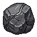
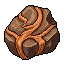
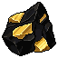
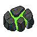

OVERDRIVE READY
OVERDRIVE READYMultiple systems are charged - choose one to activate!
5.0s
You play as the Girl Driller, a lone space miner working the Asteroid Belt. Your goal is simple: fly around, destroy mineable objects (asteroids), collect the minerals and Antique Cargo they drop, and use the money to unlock and upgrade an ever-growing arsenal of Power-Ups and Overdrive abilities.
As you earn Money, progression is driven entirely by the Skill Tree: money earned from mining and combat is spent there to unlock new Power-Ups, boost their damage/fire rate, and extend how long each Overdrive stays active.
The Mining Zone is filled with destroyable objects (asteroids). They sit in place until a Power-Up's projectile or effect strikes them.
| Mineral | Hits to Destroy |
|---|---|
| Iron | 3 |
| Bronze | 6 |
| Gold | 9 |
| Uranium | 12 |
Destroying an object releases its mineral reward, which you collect simply by flying close enough to touch it - it's then added to your running Money total automatically. Higher-tier minerals (Gold, Uranium) are worth more Money per unit but take more hits to reach.
Money is the currency spent on every Skill Tree unlock and upgrade, so mining efficiently (using the right Power-Ups, and popping Overdrives on cooldown) directly speeds up your progression.
Separate from ordinary mineral drops, rare Antique Cargo collectibles occasionally spawn as their own glowing pickups. Fly into one to collect it - it's instantly added to your Antique Cargo tally, shown as its own icon grid in the HUD with a running count for each type collected. There are 5 different Antique Cargo mineral/crystal types to find and collect over the course of the game.
Power-Ups are unlocked one at a time from the Skill Tree by spending Money. Once unlocked, a Power-Up fires automatically for the rest of the run/session - you never have to aim or trigger it manually. Drill, Suit, and Fireball each have their own paired Overdrive (see the Overdrives section below) and their own chain of upgrade nodes that boost damage, fire rate, or other stats.
Your basic mining tool, available from the very start with no unlock cost. Automatically drills into nearby objects. Upgraded through the Drill tree (Drill Power/Drill Speed/Heavy Drill/Max Drill nodes) for more damage, faster drill flight speed, and a longer Overdrive. Its Overdrive is Drill Storm.
Unlocks the "Girl Power" suit ability and is also the gateway node the Fireball Power-Up is unlocked behind. Suit upgrades add Armor (reduced damage taken), Energy (larger energy pool), a Shield (extra damage reduction on top of Armor), and a capstone Max Suit node. Its Overdrive is Girl Power.
Auto-fires fireball projectiles at objects. Upgraded through the Fireball tree (Fireball Power/Fire Rate/Fireball Size/Multi-Fire nodes) for more damage, faster throwing, a bigger orbit, and extra orbiting fireballs during its Overdrive. Its Overdrive is Inferno.
Each of the 3 Power-Ups has its own branch in the Skill Tree with numbered upgrade nodes (up to level 20). Spending Money on these nodes increases that Power-Up's damage, fire rate, speed, or a similar stat depending on the Power-Up. A fully upgraded Power-Up hits harder and fires faster than a freshly-unlocked one.
Not a weapon - this unlocks a small autonomous companion that automatically flies to and gathers whatever minerals/Antique Cargo collectibles are currently visible on screen, then moves on to the next one. It never attacks and has no Overdrive; it just saves you legwork on pickups.
Every unlocked Power-Up has a matching Overdrive - a temporary, supercharged burst of that ability. Overdrives are entirely time-based: they do not cost minerals or Money to activate. Instead each one cycles through a Wait phase and an Active phase on its own timer.
The Active phase is always exactly 10 seconds, on every activation - it never grows. Only the Wait/recharge phase that follows grows, by 5 seconds every time you use that Overdrive:
Overdrive Core upgrade levels add flat bonus seconds on top of the 10-second Active phase shown above (not the Wait phase).
The game takes place in a single Mining Zone: the Asteroid Belt. It has its own set of 5 destroyable objects, spawning endlessly as you clear them.
| Zone | Name | Objects |
|---|---|---|
| Zone 1 | Asteroid Belt | 5 |
Once unlocked from the Skill Tree, the Collector is a small companion ship that flies alongside you. It automatically seeks out whichever minerals/Antique Cargo collectibles are currently visible on screen and gathers them one after another, moving on to the next target once it grabs one. It never attacks or damages anything, and its own travel speed is fixed - no upgrade makes it faster. Its only job is to save you the trouble of flying over to every drop yourself, letting you focus on fighting and moving on to the next target.
The game uses full auto-save - there is no manual Save button and nothing you need to remember to do.
OVERDRIVE READY SCORE: 0 (0)
SCORE: 0 (0) Asteroid Belt · Depth 0m
Asteroid Belt · Depth 0m
Iron: 0
Bronze: 0
Gold: 0
Uranium: 0 Antique Cargo
Antique Cargo